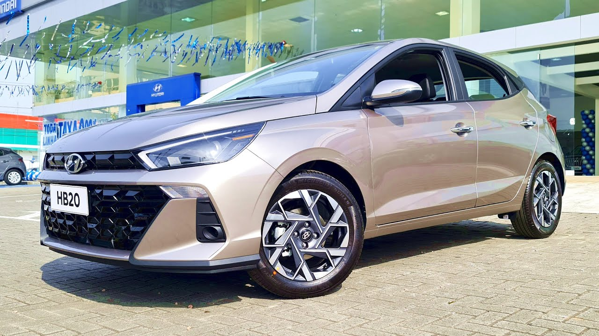

Modelos
Hb20 Sense

Sense – R$ 76.690.
O HB20 Sense vem equipado com direção elétrica, ar-condicionado analógico, computador de bordo de 3,5 polegadas,
rádio (com AM/FM, Bluetooth e porta USB), além de vidros elétricos nas portas dianteira.
Por fora, retrovisores e maçanetas são de plástico fosco. As rodas são de aço estampado, com calotas de plástico,
calçadas em pneus aro 14. Ele também não conta com faróis de neblina, apenas luz diurna logo abaixo dos faróis.
Por outro lado, se destaca na segurança. O carrinho conta com seis airbags. São dois frontais, dois laterais,
além de duas bolsas do tipo cortina. O Argo, por exemplo, só oferece insufladores para motorista e passageiro
Comfort

Comfort – R$ 79.990.
Equipado desde a versão básica com 6 airbags (frontal, lateral e de cortina), controles de estabilidade e
tração, direção elétrica, assistente de partida em rampa, faróis com luzes diurnas, computador de bordo
com tela TFT de 3,5”, ar-condicionado, piloto automático e
limitador de velocidade e banco do motorista com ajuste de altura, o HB20 soma na versão Comfort 1.0 a
central multimídia com tela de 8” com Apple CarPlay e Android Auto sem fio.
O hatch da Hyundai tem também quatro alto-falantes, entrada USB tipo C (além da tradicional tipo A),
vidros elétricos também nas portas traseiras, chave canivete, alarme e rodas de aço aro 15”. Poderia trazer
regulagem no volante ou um sensor de estacionamento, mas esses só a partir da Limited. Com esse pacote,
o HB20 1.0 Comfort sai hoje por R$ 81.090, ou R$ 3.300 a mais que a de entrada Sense.
Limited

Limited – R$ 85.490.
A Hyundai conta com muitas novidades em sua linha 2023 do HB20 Hatch com o objetivo de manter a marca entr
e os veículos mais vendidos do Brasil. Uma das versões disponíveis é o
Hyundai HB20 2023 Limited 1.0 MT, que chega com design renovado e melhorias importantes em todo o veículo.
Entre os itens de segurança que podemos destacar estão os airbags frontal, lateral e na cortina, com ênfase
no duplo airbag na parte da frente do veículo.
Outros destaques são a inclusão de travamento automático
das portas e do porta-malas a 20 km/h, vidros elétricos com função antiesmagamento, tomada de 12V,
piloto automático, câmera de ré e limitador de velocidade.
Além disso, o Limited 2023 1.0 MT conta com controle de estabilidade, controle de tração, acendimento
automático dos faróis, frenagem de emergência, sensor de estacionamento traseiro e assistente de partida em rampa.
Platinum

Platinum 1.0 TGDI AT – R$ 105.390.
Como um hatch compacto precisa, muitas vezes, ser o único carro da família, esse pecado que sofre o
HB20 pode ser derradeiro para muita gente deixa-lo de lado. O porta-malas de 300 litros é bom, mas nada extraordinário. Enquanto o
espaço para quem senta na frente é bom, sendo o motorista agraciado por diversos tipos de regulagem para banco e volante.
Um ponto positivo é que o HB20 finalmente ganhou rodas maiores: os modelos de 16 polegadas da versão topo de linha Platinum Plus
parecem preencher perfeitamente o espaço destinado a elas. Ele não aparenta mais ter rodas menores do que deveria, como antes.
Com um preço acessível que caberá em seu bolso.